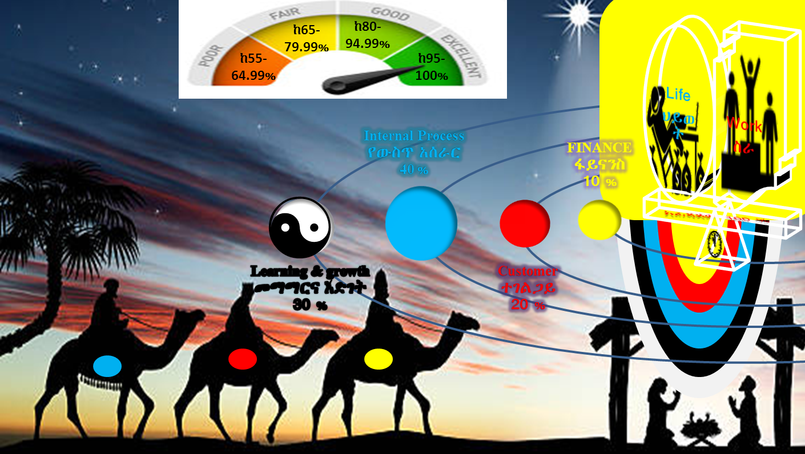

Work and Life is the function of strategy, culture and habits drived by underlying motives. As stated by clear,2018 some of those motives include:
We all work and live to fullfill those underlying motives througt diferent tasks, which has been catagorised as "Occupational maps" which are subjected to modifications and changes based on the labour market demand according to most TVET frameworks England's has 15 occupational map currently and Ethiopina occupational map has the following secters.
Our mission is to healp Governmental, Non dovernmental and private organizations and individuas on thair journey to create satisfied human & planetery needs by demand driven & creative jobs managed through various and organized reform instruments tools.